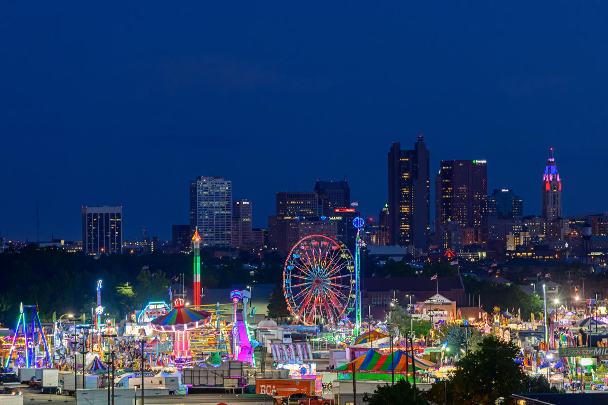
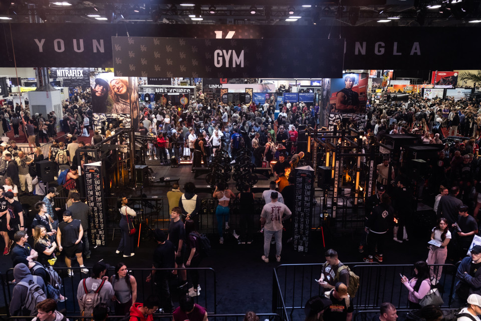
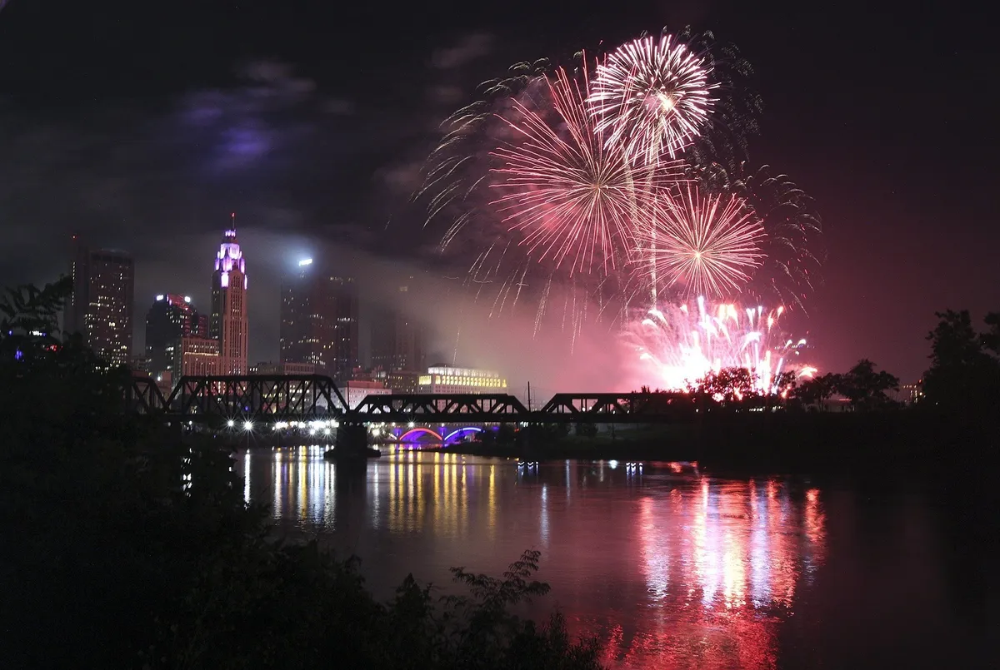
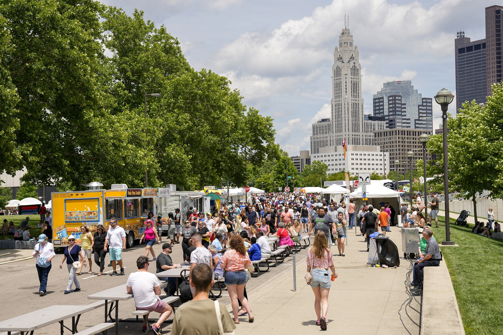
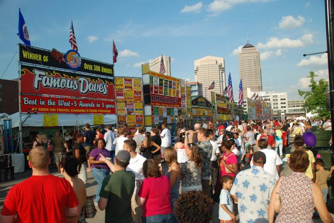
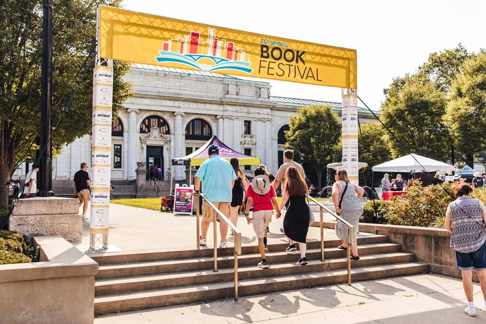

The city has wonderful yearly events!
TA favorite family tradition since 1850, the Ohio State Fair is one of the longest-standing traditions in the state. It’s packed with exhilarating Midway rides, world-class concerts, and the famous butter cow.

Founded by Arnold Schwarzenegger in 1989, this is the largest multi-sport festival in the world. It attracts over 20,000 athletes from 80 nations to compete in more than 60 sports, ranging from bodybuilding and martial arts to cheerleading and eSports.

This is the largest Independence Day celebration in the Midwest, drawing over 400,000 visitors to Downtown Columbus. The event features a huge street festival, live music, a parade, and the most spectacular fireworks display in Ohio.

Recognized as one of the top fine art festivals in the country, this event transforms the downtown riverfront into a massive outdoor gallery. It showcases over 200 juried artists from across the nation, alongside multiple stages for live music, dance, and theater.

This beloved summertime tradition offers three days of "hot ribs and cool jazz." Visitors can sample BBQ from award-winning pitmasters from across the country while enjoying continuous live performances from world-class jazz musicians on multiple stages.

The Columbus Book Festival is a massive, two-day celebration held at the historic Main Library and Topiary Park. It features over 200 national and local authors, panel discussions, and the popular "Indie Author Alley," where you can meet self-published creators.
